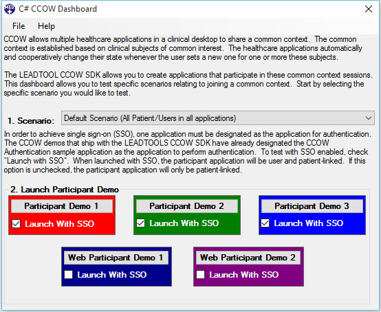

CCOW Dashboard DemoDashboard application to launch multiple desktop and web client CCOW participant demos to simulate common and secure context participation. Allows the user to test different scenarios relating to joining secure and common context session:
Launch participant demos with or without single sign-on. |
 |